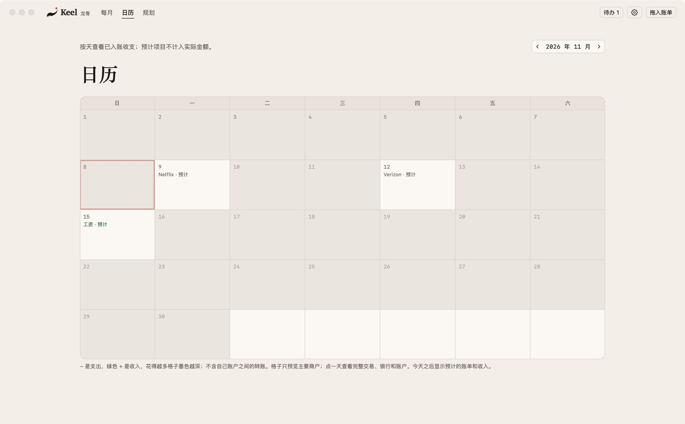
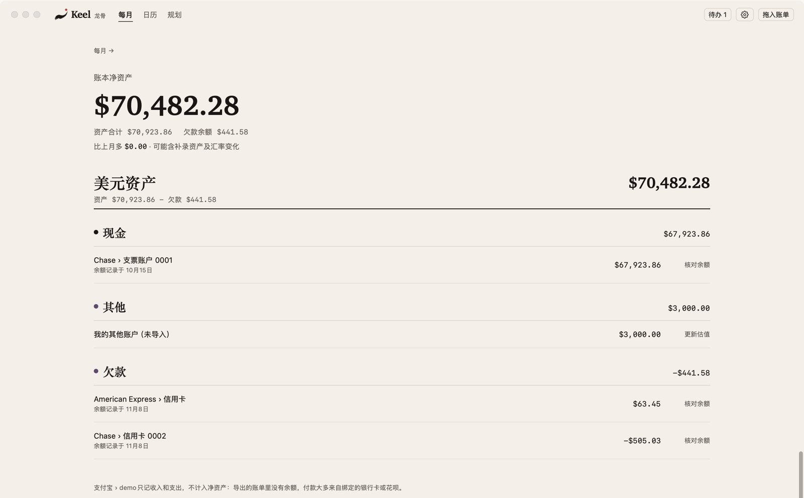
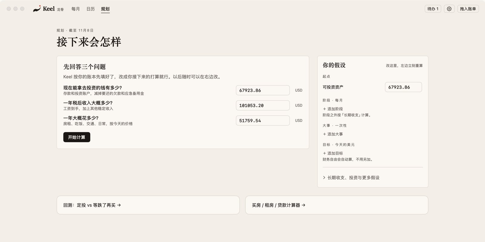

把每一笔账记清楚，
再看清离财务自由还有多远。Keep every dollar accounted for, and see how far financial freedom is.
把银行、信用卡、支付宝和微信的账单拖进来，Keel 自动记账、对账、分类，告诉你这个月钱花在哪、接下来现金够不够。数据只在你的 Mac 上。Drop in statements from your bank, cards, Alipay and WeChat. Keel books, reconciles and categorises them, then shows where this month's money went and whether your cash will last. Your data stays on your Mac.
免费下载 Keel for MacDownload Keel for Mac — free Apple 公证 · 不用注册 · 不上传数据Notarized by Apple · no account · nothing uploaded需要 Apple 芯片（M1 或更新）和 macOS 14 或更新。Requires Apple silicon (M1 or later) and macOS 14 or later.
账单拖进来，账就记好了Drop in a statement; the books are done
认得各家银行导出的 CSV、Excel 和加密压缩包。信用卡还款、自己账户之间的转账自动配对，不会算成花销；每份账单的余额都拿来核对，对不上会告诉你。Keel reads the CSV, Excel and encrypted zip exports banks give you. Card payments and transfers between your own accounts pair themselves instead of counting as spending, and every statement balance is checked.

钱花在哪，一眼看清Where the money went, at a glance
每天花了什么Spending by day
一天一组，每一笔都在，点开就能改分类。One group per day, every purchase, one click to recategorise.
分类自动学会Categories that learn
改一次分类，以后同一个商户自动归好。Fix a category once and the same merchant follows from then on.
美元和人民币Dollars and yuan
两种货币分开看，也能折算成一种看总数。See each currency on its own, or converted into one total.


接下来的路，先算一遍Run the numbers before the big decisions
从你的账本出发，回答三个问题：接下来 24 个月现金够不够、1 年 3 年 5 年后有多少、什么时候财务自由。换工作、搬家、学费这样的大事都能放进去一起算。Starting from your own ledger it answers three questions: will cash last the next 24 months, what you'll have in 1, 3 and 5 years, and when you could be financially free. Add job changes, moves or tuition and see them in the plan.

安装只要一分钟Install in a minute
- 下载 Keel.dmg 并打开。Download Keel.dmg and open it.
- 把 Keel 拖进「应用程序」文件夹。Drag Keel into Applications.
- 打开 Keel，把第一份账单拖进窗口。以后有新版本，Keel 会在设置里提示你一键更新。Open Keel and drop your first statement into the window. New versions install from Settings with one click.
账单和账本只存在你的 Mac 上，不需要注册，也不会上传到任何服务器。目前支持美元和人民币两种货币。Statements and your ledger stay on your Mac: no account, nothing uploaded. Keel currently supports US dollars and Chinese yuan.